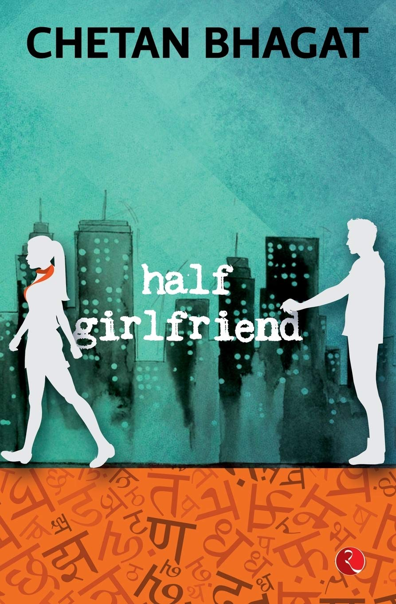

The Alchemist
Author:Paulo Coelho
Synopsis
Paulo Coelho's enchanting novel has inspired a devoted following around the world. This story, dazzling in its powerful simplicity and soul-stirring wisdom, is about an Andalusian shepherd boy named Santiago, who travels from his homeland in Spain to the Egyptian desert in search of a treasure buried near the Pyramids.
Along the way he meets a Romany woman, a man who calls himself a king, and an alchemist, all of whom point Santiago in the right direction for his quest. No one knows what the treasure is, or whether Santiago will be able to surmount the obstacles in his path; but what starts out as a journey to find worldly goods turns into a discovery of treasure within.
Lush, evocative, and deeply humane, the story of Santiago is an eternal testament to the transforming power of our dreams and the importance of listening to our hearts
Brida
Author:Paulo Coelho
Synopsis:
This is the story of Brida, a young Irish girl,
and her quest for knowledge. She has long been
interested in various aspects of magic but is
searching for something more. Her search leads
her to people of great wisdom, who begin to
teach Brida about the spiritual world.
She meets a wise man who dwells in a forest,
who teaches her about overcoming her fears
and trusting in the goodness of the world;
and a woman who teaches her how to dance to
the music of the world, and how to pray to the moon.
As Brida seeks her destiny, she struggles to find
a balance between her relationships and her desire
to become a witch. This enthralling novel
incorporates themes that fans of Paulo Coelho
will recognize and treasure—it is a tale of love,
passion, mystery,and spirituality from the master storyteller.

Half A Girlfriend
Author:Chetan Bhagath
Synopsis
Once upon a time, there was a Bihari boy called Madhav. He fell in love with a girl from Delhi called Riya. Madhav didn't speak English well. Riya did. Madhav wanted a relationship. Riya didn't. Riya just wanted friendship. Madhav didn't. Riya suggested a compromise. She agreed to be his half girlfriend. From the author of the blockbuster novels Five Point Someone, One Night @ the Call Center, The 3 Mistakes of My Life, 2 States and Revolution 2020 comes a simple and beautiful love story that will touch your heart and inspire you to chase your dreams.